Oro di Sicilia – Der Geschmack Siziliens
Il gusto autentico della SiciliaFrisches Obst und Gemüse direkt aus Sizilien – mit Liebe angebaut, von Hand geerntet und ohne Umwege zu dir gebracht. Oro di Sicilia ist ein kleines Familienunternehmen mit Wurzeln in Sizilien. Wir stehen für ehrliche, nachhaltige Landwirtschaft und bringen dir den echten Geschmack unserer Heimat direkt nach Hause.
Unsere Produkte
I nostri prodottiBlut-Orangen (Tarocco)
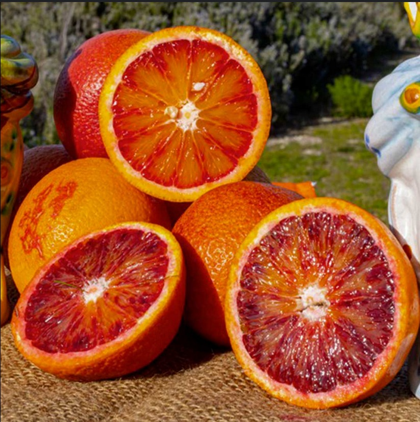3,00 € / kg
Navel Orangen

3,00 € / kg
Vanille Orangen
3,50 € / kg
Orangen Marmelade
3,99 €
Zitronen
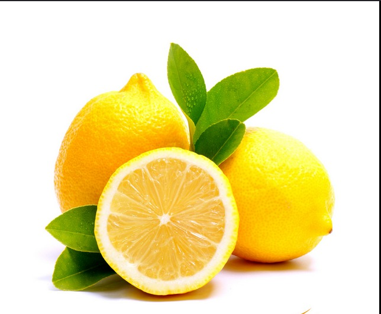3,99 € / kg
Clementinen
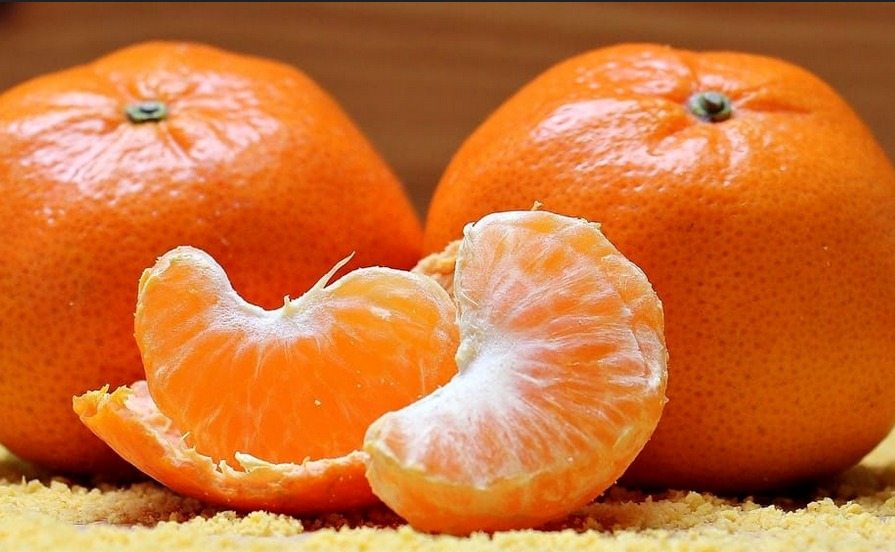2,99 € / kg
Mandarinen
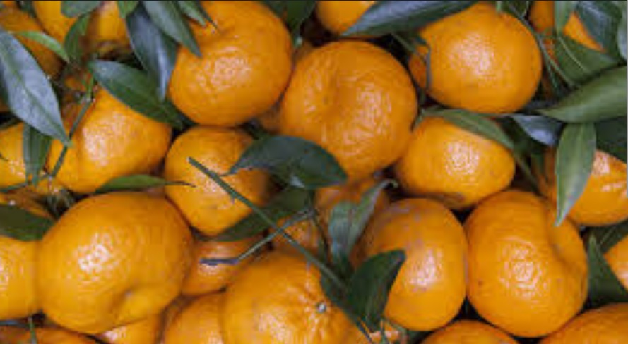2,90 € / kg
Ceder
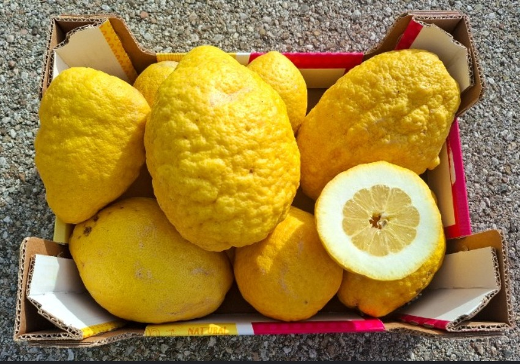5,00–6,00 € / Stück
Kaktus feige

2,50 € / kg
Dattel Tomate

7,00 € / kg
Merinda Tomaten
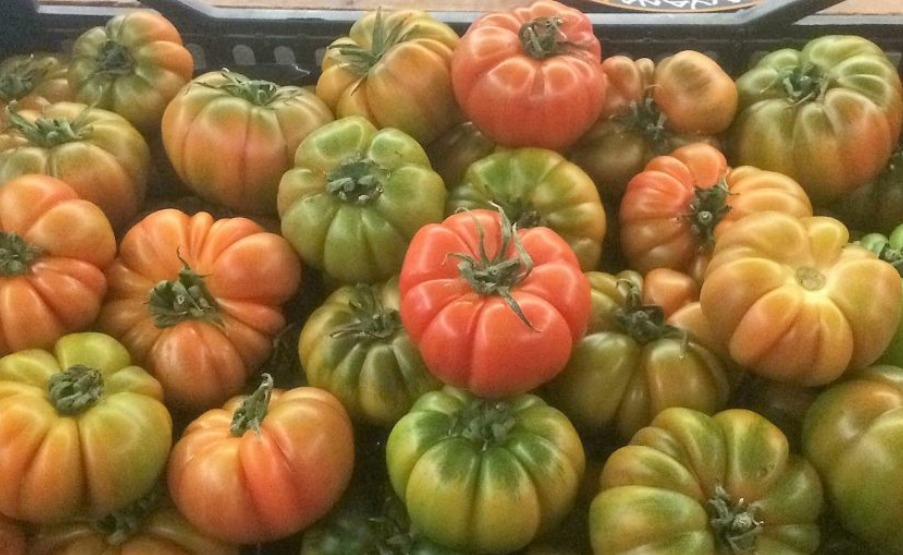7,50 € / kg
San Marzano Tomaten
.jpg)
5,00 € / kg
Merinda Tomaten
6,90 € / kg
Getrocknete Tomaten

4,50 €
Auberginen
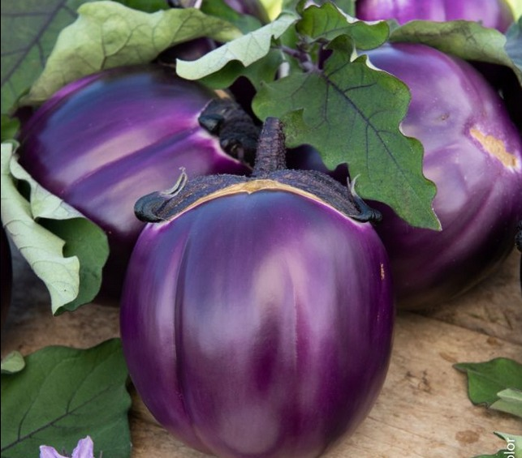3,99 € / kg
Fenchel
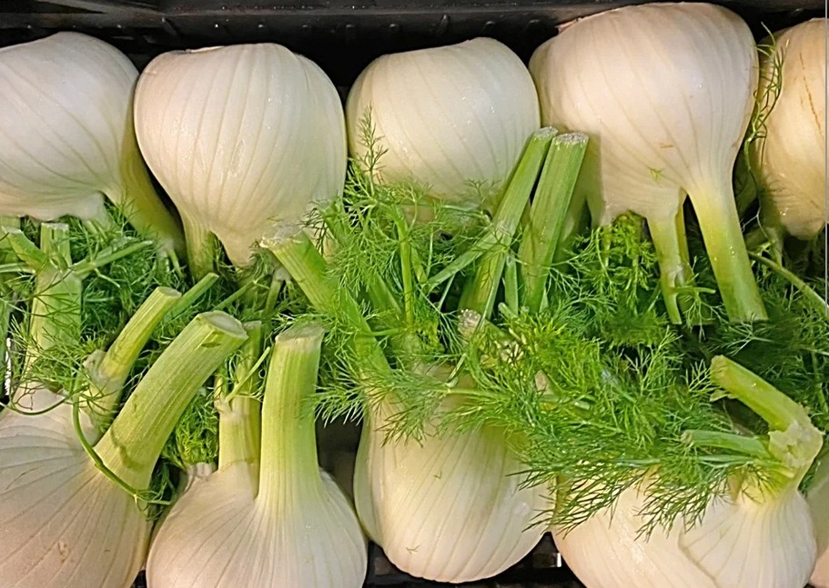2,99 € / kg
Artischocken
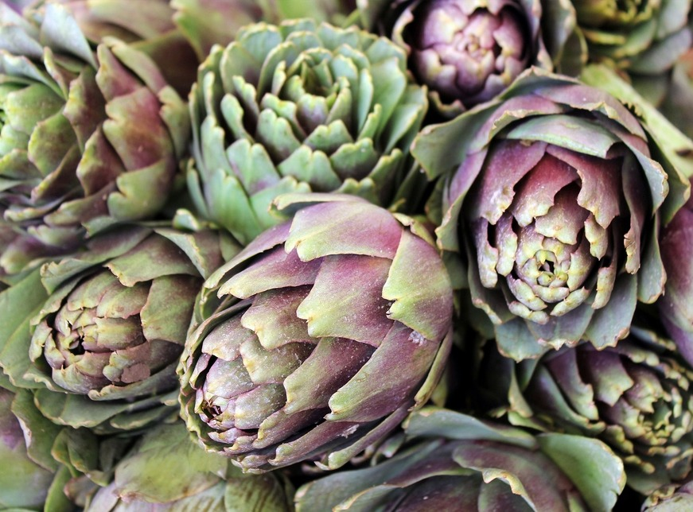1,00–1,20 € / Stück
Tropea Zwiebeln

6,00 € / Bund
Weiße Zwiebeln
3,00 € / kg
Riesen Zwiebel (Giaratana)
4,00 € / kg
Spitz Paprika

2,99 € / kg
Paprika (normal)
.jpg)
3,99 € / kg
Wassermelone
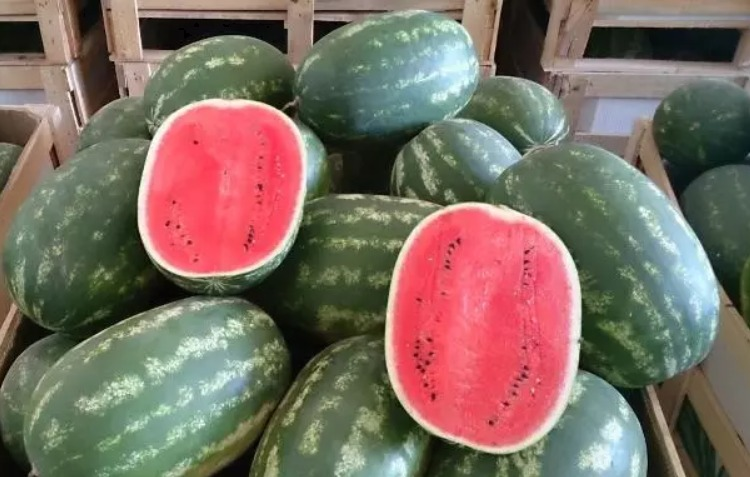2,00 € / kg
Geschnittene Wassermelone
1,80 € / kg
Lila Blumenkohl

Preis variabel
Stängelkohl
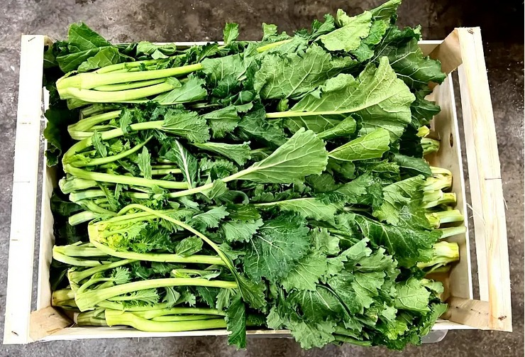Preis variabel
Olivenöl

18,00 € / L